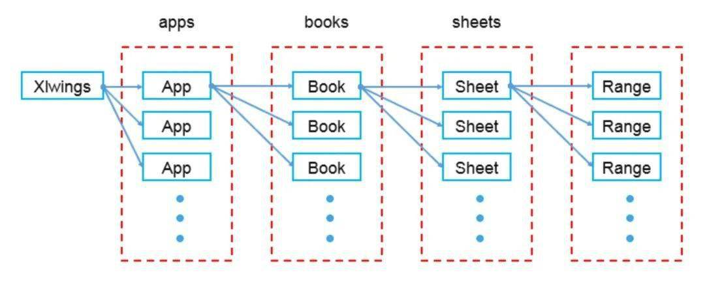

xlwings
- 结构图

app：应用层 books：总表层 sheets：单表
读取表
import xlwings as xw
wb = xw.Book() # this will create a new workbook
wb = xw.Book('FileName.xlsx') # connect to a file that is open or in the current working directory
wb = xw.Book(r'C:\path\to\file.xlsx') # on Windows: use raw strings to escape backslashes
表格操作
import xlwings as xw
wb = xw.Book('FileName.xlsx')
sht = wb.sheets['工作簿名']
# 清空表格
sht.clear()
# 设置a列到zz列格式(不管有没有数据的左右列，最好指定范围)
sht.range("a:zz").api.NumberFormat = "@"
"""
@ 文本
"""
# 设置字体大小
sht.range('a:zz').api.font.size = 15
# 设置字体
sht.range("a:a").api.font.name = "微软雅黑"
# 自动调整单元格大小
sht.autofit()
# 读取单元格数据，返回二维数组[[a,b],[c,d]]
sht.range('a1:b2').value
# 这条只读取一行，返回[a,b]需要注意
sht.range('a1:a2').value